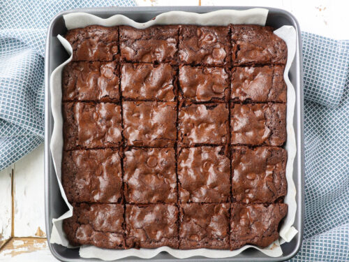

Chewy Brownies Recipe

The best chewy brownies with a rich chocolate flavor recipe by Tessa Arias.
Source: Link
Ingredients
- 5 tbsp unsalted butter
- 1 1/4 cups granulated sugar
- 2 large eggs, cold
- 1 egg yolk, cold
- 1 tsp vanilla extract
- 1/3 cup vegetable oil
- 3/4 cup cocoa powder
- 1/2 cup all-purpose flour
- 1 tbsp cornstarch
- 1/8 tsp baking soda
- 1/4 tsp salt
- 3/4 cup semisweet chocolate chips
Steps
- Pre-heat oven to 325°F.
- Line an 8 by 8 inch pan with parchment paper and spray with oil.
- Microwave butter and sugar for 1 min, or until butter is melted.
Whisk in eggs, egg yolk, and vanilla extract.
Stir oil and cocoa powder into the mixture.
- With spatula stir in flour, cornstarch, baking soda, and salt until combined.
Stir in chocolate chips.
- Spread batter evenly into the prepared pan.
- Bake for 30 min, or until the brownies are set, and a skewer inserted into the center
or the brownie has moist crumbs attached. Do not over-bake.
- Let cool completely to solidify before cutting and serving.